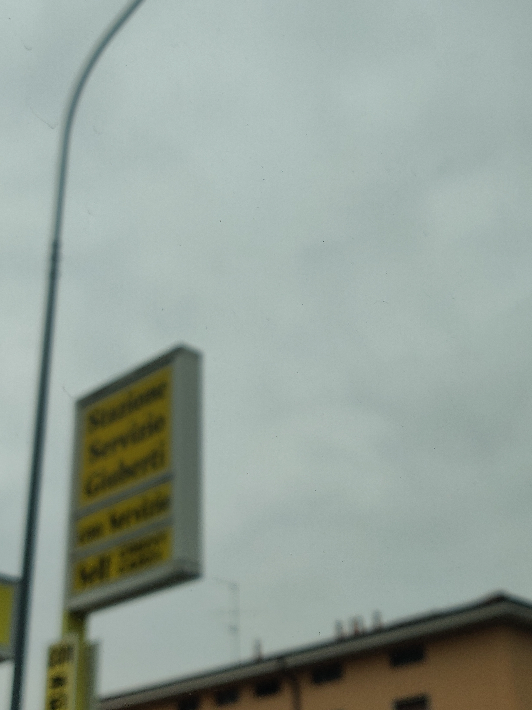
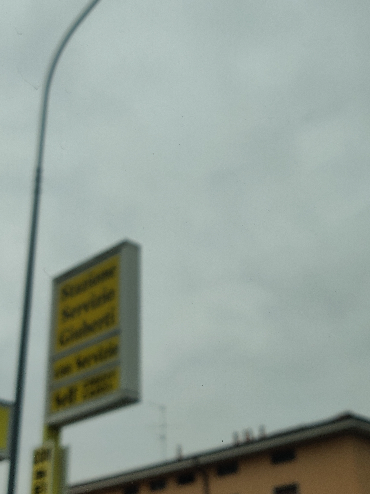
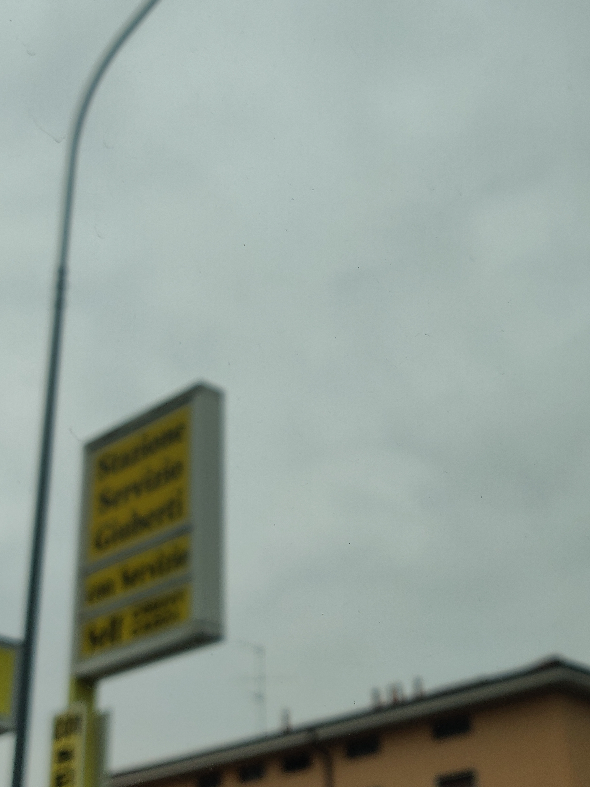

dont forget to open in new tab so you have full res :3


 



hi moon!
after a quick trip to the dentist, im heading home :]
snagged one of my favourite seats because
i took some pictures while on the bus,
hopefully identifiable enough for you to track down these following objectives:
if you dont find these within 15 minutes, dont bother :p
dont forget to open in new tab so you have full res :3

you should find the locations in the images first!
maybe street view has icons that can track buses down
perhaps walking around in street view and checking out where bus stops are can help
my pictures have a lot more in them than you think
think you have everythin?